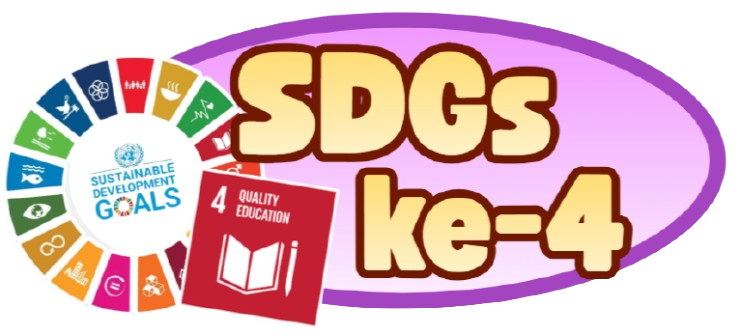


Website ini dibuat untuk membantu kita memahami peran Indonesia dalam kerja sama internasional sekaligus mengenal lebih dalam mengenai 17 Sustainable Development Goals.
Pada halaman ini, kamu akan menemukan penjelasan lengkap tentang SDGs, mulai dari tujuan, manfaat, tantangan global, hingga contoh implementasi di Indonesia.
Yuk jelajahi dunia SDGs dan lihat bagaimana setiap individu punya peran penting dalam menciptakan masa depan yang lebih baik! 🌎💛
SDGs yang merupakan singkatan dari Sustainable Development Goals atau Tujuan Pembangunan Berkelanjutan adalah agenda global berisi 17 tujuan utama dan 169 target yang disepakati oleh negara-negara anggota Perserikatan Bangsa-Bangsa (United Nations) untuk mencapai kesejahteraan manusia dan pelestarian lingkungan hingga tahun 2030.
Setiap tujuan global memiliki peran besar untuk menciptakan masa depan dunia yang lebih baik.
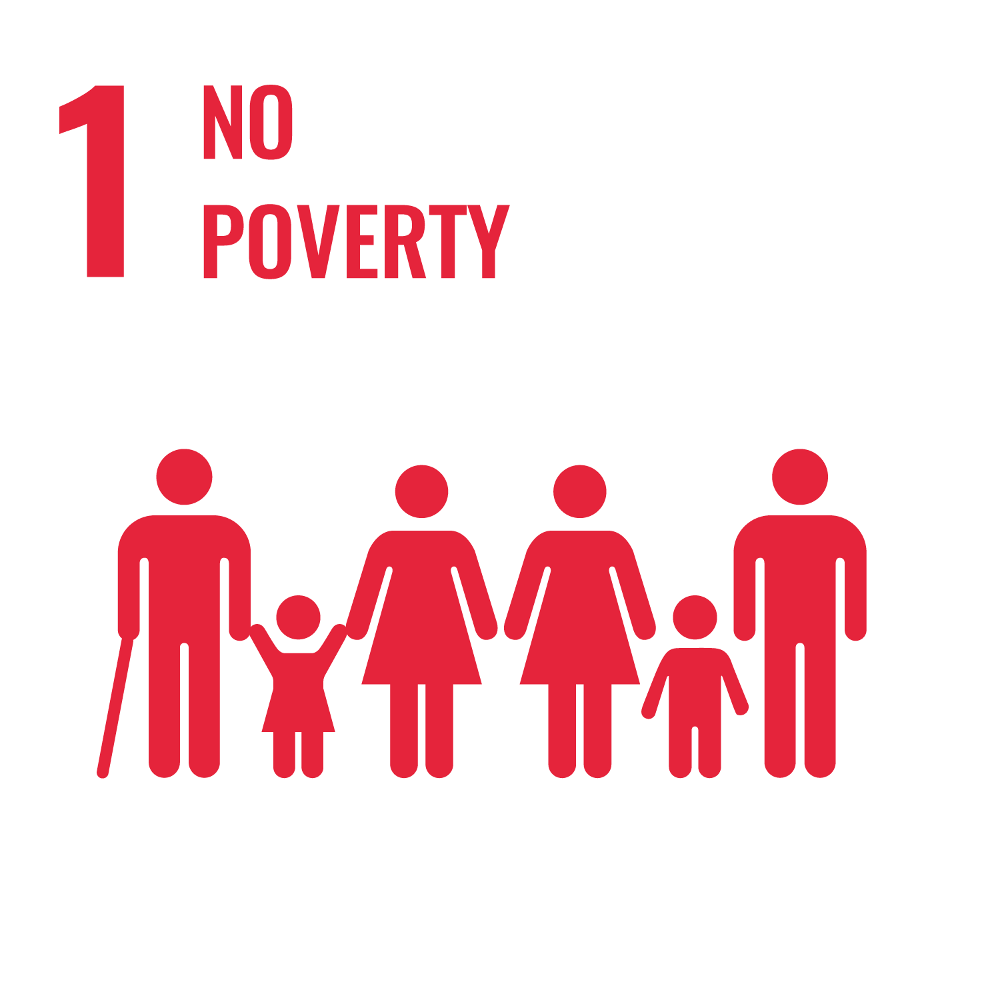
SDG 1 Bertujuan untuk mengakhiri kemiskinan dalam segala bentuk di seluruh dunia. Tujuan ini dilakukan dengan memastikan setiap orang dapat memenuhi kebutuhan dasar seperti makanan, pakaian dan tempat tinggal. Selain itu masyarakat perlu mendapatkan akses terhadap pendidikan, kesehatan serta pekerjaan yang layak. Dengan begitu setiap orang memiliki kesempatan untuk meningkatkan taraf hidupnya.
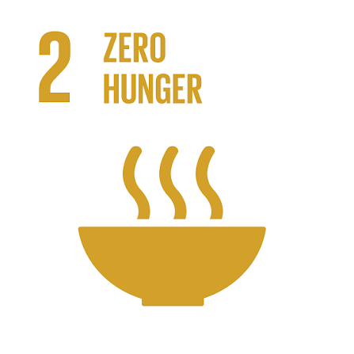
SDG 2 bertujuan untuk mengakhiri kelaparan dan memastikan semua orang mendapatkan makanan yang cukup serta bergizi. Tujuan ini juga berusaha meningkatkan kualitas nutrisi masyarakat dan mendukung pertanian berkelanjutan. Para petani perlu mendapatkan bantuan dan teknologi yang memadai agar hasil pertanian meningkat tanpa merusak lingkungan.
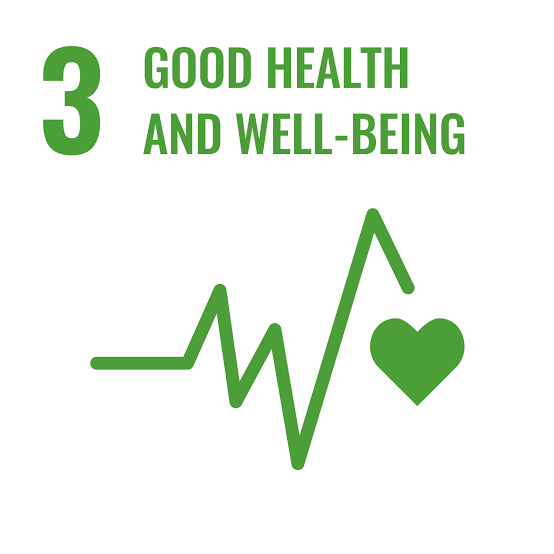
SDGs 3 Menjamin setiap orang dapat hidup sehat dan mendapatkan pelayanan kesehatan yang layak. Hal ini mencakup kemudahan dalam memperoleh obat-obatan dan vaksin serta fasilitas kesehatan yang berkualitas. Tujuan ini juga berusaha mencegah penyebaran penyakit dan mengurangi angka kematian ibu serta bayi. Kesehatan mental juga perlu diperhatikan agar masyarakat dapat hidup lebih sejahtera.
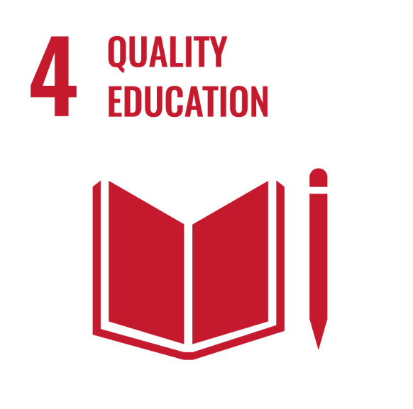
SDG 4 Memastikan semua anak mendapatkan pendidikan yang layak tanpa membedakan kondisi ekonomi maupun latar belakang mereka secara merata. Tujuan ini juga mendukung peningkatan kemampuan guru serta penyediaan fasilitas belajar yang memadai. Dengan pendidikan yang baik setiap orang memiliki kesempatan untuk mengembangkan kemampuan dan meraih masa depan yang lebih baik.
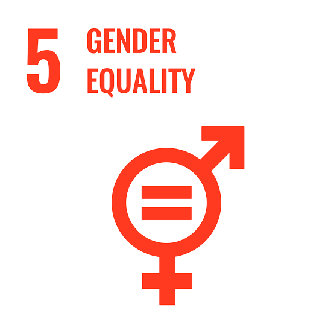
SDG 5 Mewujudkan kesetaraan antara laki-laki dan perempuan dalam berbagai bidang kehidupan. Tujuan ini berusaha menghapus diskriminasi dan kekerasan terhadap perempuan serta anak perempuan karena setiap orang harus memiliki kesempatan yang sama dalam memperoleh pendidikan dan pekerjaan.
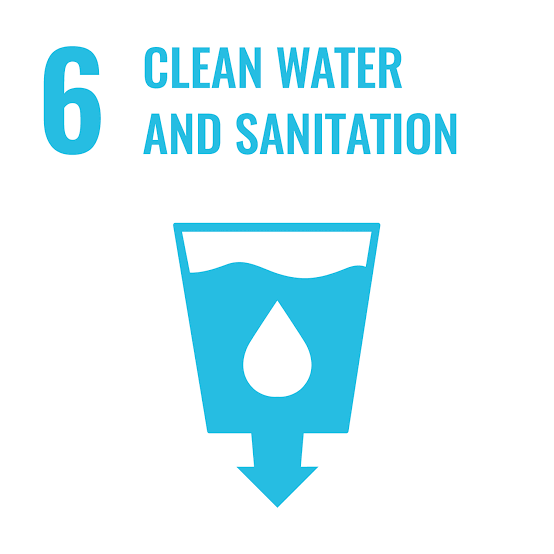
SDG 6 Memastikan semua orang mendapatkan akses terhadap air bersih dan fasilitas sanitasi yang layak. Air bersih sangat penting untuk kebutuhan sehari-hari dan menjaga kesehatan manusia supaya terhindar dari wabah penyakit. Tujuan ini juga berusaha mengurangi pencemaran sumber air serta meningkatkan pengelolaan limbah.
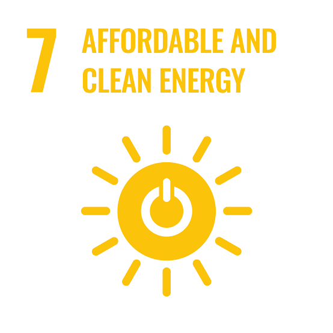
SDG 7 Memastikan seluruh masyarakat dapat menggunakan energi yang aman dan terjangkau. Tujuan ini mendorong penggunaan energi terbarukan seperti tenaga surya dan angin untuk mengurangi ketergantungan terhadap bahan bakar fosil. Penggunaan energi juga perlu dilakukan secara efisien agar tidak menghasilkan terlalu banyak polusi yang dapat mencemari lingkungan.
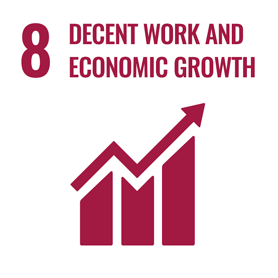
SDG 8 Mendorong pertumbuhan ekonomi yang berkelanjutan serta menciptakan lapangan pekerjaan yang layak bagi masyarakat. Setiap pekerja berhak mendapatkan upah yang adil dan lingkungan kerja yang aman. Tujuan ini juga mendukung perkembangan usaha kecil dan menengah agar dapat membuka lebih banyak lapangan pekerjaan.
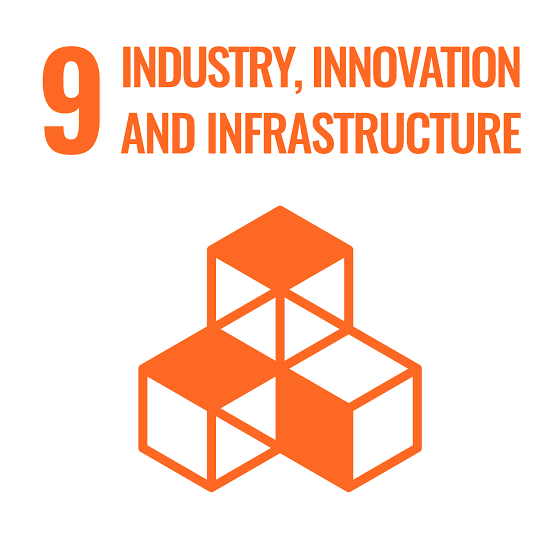
SDG 9 Membangun infrastruktur yang kuat dan berkualitas untuk mendukung kehidupan masyarakat. Pembangunan jalan, jembatan, serta jaringan internet perlu dilakukan agar aktivitas masyarakat menjadi lebih mudah. Tujuan ini juga mendorong perkembangan industri dan penggunaan teknologi baru.
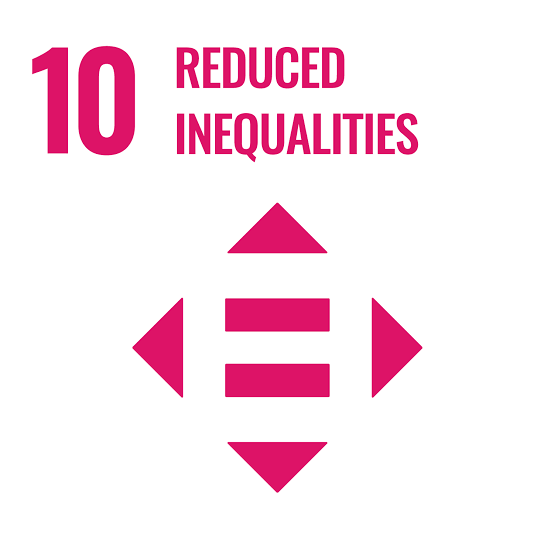
SDG 10 Mengurangi perbedaan dan ketimpangan yang terjadi antara daerah terpusat dan pelosok. Setiap orang harus memiliki kesempatan yang sama untuk mendapatkan pendidikan dan pekerjaan tanpa memandang kondisi ekonomi atau latar belakangnya. Tujuan ini juga berusaha membantu kelompok masyarakat yang kurang mampu agar mendapatkan kehidupan yang lebih baik.
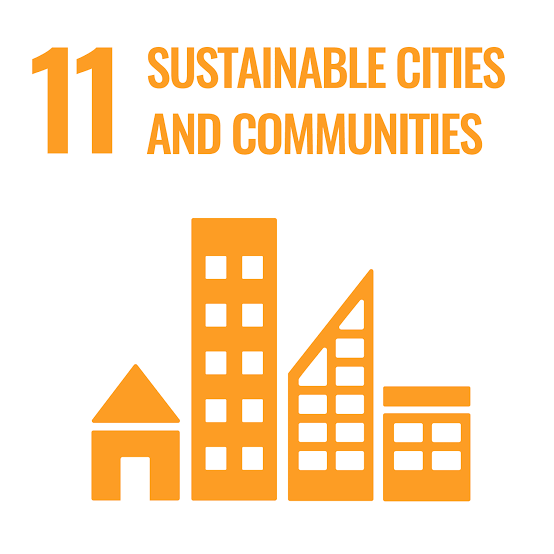
SDG 11 Menciptakan kota dan permukiman yang aman serta nyaman untuk ditinggali. Hal ini dapat dilakukan dengan menyediakan tempat tinggal yang layak dan transportasi umum yang baik. Selain itu pembangunan kota harus menyediakan ruang terbuka hijau dan memperhatikan keselamatan masyarakat dari bencana alam.
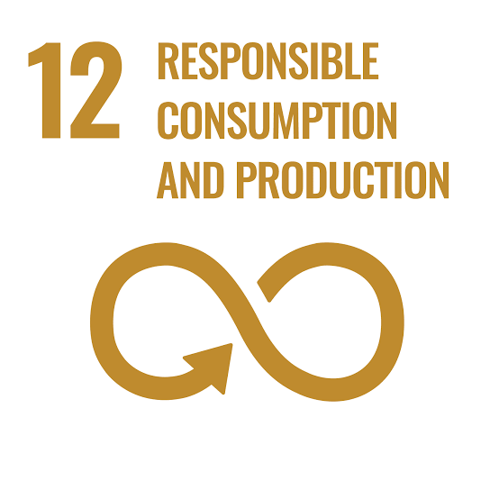
SDG 12 Mengajak masyarakat untuk menggunakan sumber daya alam secara bijak dan tidak berlebihan. Tujuan ini mengharapkan perusahaan untuk menggunakan cara produksi yang lebih ramah lingkungan. Dengan menerapkan pola konsumsi dan produksi yang bertanggung jawab maka kerusakan lingkungan dapat dikurangi.
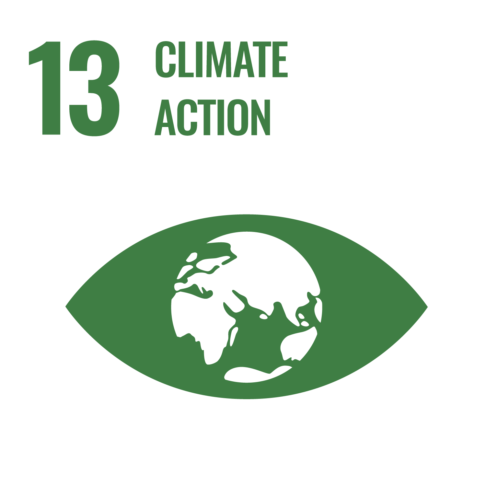
SDG 13 Mengambil tindakan untuk mengatasi perubahan iklim dan mengurangi dampaknya terhadap kehidupan manusia. Salah satu caranya adalah dengan mengurangi penggunaan bahan bakar fosil, penanaman pohon, serta perlindungan hutan juga penting untuk menjaga keseimbangan lingkungan.
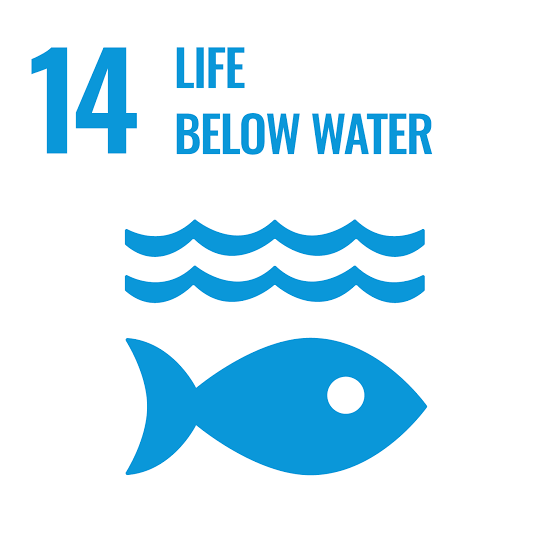
SDG 14 Melindungi laut dan seluruh makhluk hidup yang tinggal di dalamnya. Tujuan ini berusaha mengurangi pencemaran laut akibat sampah plastik dan limbah berbahaya. Terumbu karang serta habitat laut lainnya juga perlu dijaga agar kehidupan bawah laut tetap seimbang.
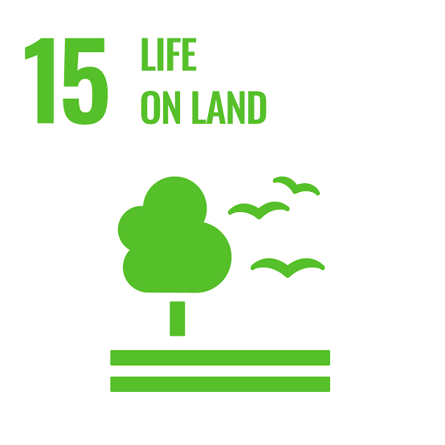
SDG 15 Melindungi lingkungan darat dan menjaga kelestarian berbagai jenis tumbuhan serta hewan. Tujuan ini berusaha mengurangi penebangan hutan secara liar dan mencegah kerusakan lahan serta habitat hewan juga perlu dilindungi agar tidak semakin banyak spesies yang terancam punah.
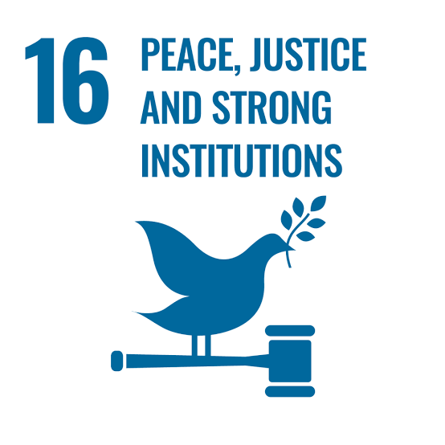
SDG 16 Menciptakan kehidupan masyarakat yang damai dan adil serta bebas dari kekerasan. Tujuan ini juga berusaha bahwa Setiap orang harus mendapatkan perlindungan hukum dan memiliki hak yang sama.
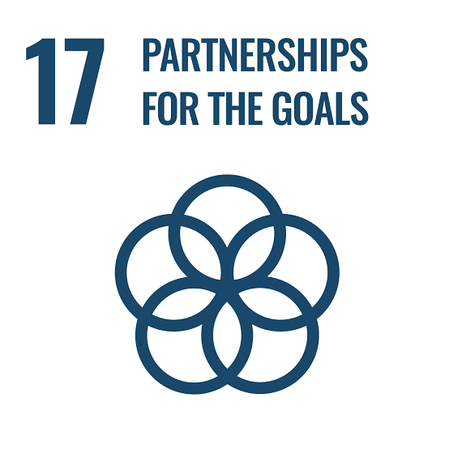
SDG 17 Meningkatkan kerja sama antara negara dan berbagai pihak untuk mencapai seluruh tujuan SDGs. Setiap negara perlu saling membantu melalui pertukaran ilmu pengetahuan dan teknologi serta dukungan dana. Kerja sama yang juga dapat dilakukan oleh pemerintah, organisasi internasional, maupun masyarakat.
SDGs bukan hanya tugas pemerintah atau organisasi besar. SDGs adalah tanggung jawab kita semua. Setiap tindakan kecil yang kamu lakukan hari ini dapat membawa dampak besar bagi masa depan bumi.
Kamu bisa mulai dari hal-hal sederhana seperti menjaga kebersihan lingkungan, mendukung pendidikan, menghemat energi, berdonasi, mengurangi sampah plastik, hingga menyebarkan informasi positif kepada teman-temanmu.
Dunia membutuhkan generasi muda yang peduli, kreatif, dan berani mengambil langkah untuk menciptakan perubahan. Jadilah bagian dari solusi, bukan masalah. Mulailah hari ini, mulailah dari dirimu.